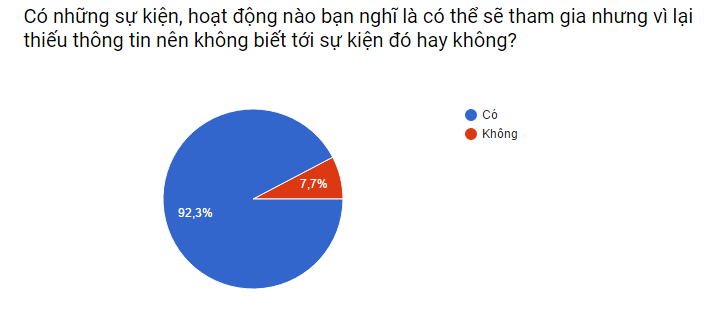

Vì sao cần cải tiến quy trình thông thường???
Trong các bước của quy trình nêu trên, bước 2 có nhiều vấn đề bất cập. Với những người dùng facebook thông thường, những trang facebook chưa được điều chỉnh sẽ cập nhật thông tin không hiệu quả,
nhiều thông tin rác không cần thiết, những tin chính sẽ bị trôi khá nhanh. Kênh thông tin bạn bè khó có khả năng cập nhật kịp thời tùy tình huống.
Chúng tôi đề nghị cải tiến quy trình ở bước 2 bằng một quy trình cấu hình facebook để thông tin hiển thị được chính xác hơn.

QUY TRÌNH CẢI TIẾN
Bước 1:
zzz
Bước 2:
zzz
Bước 3:
zzz
Bước 4:
zzz
QUY TRÌNH CẢI TIẾN